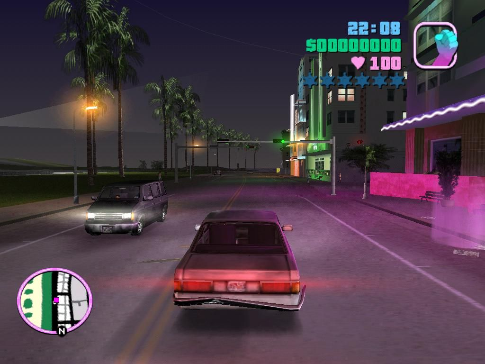
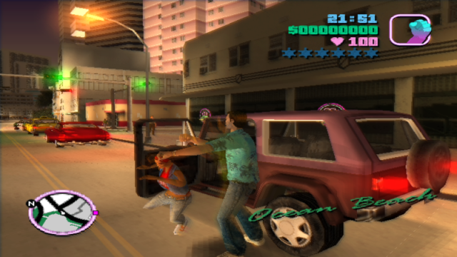
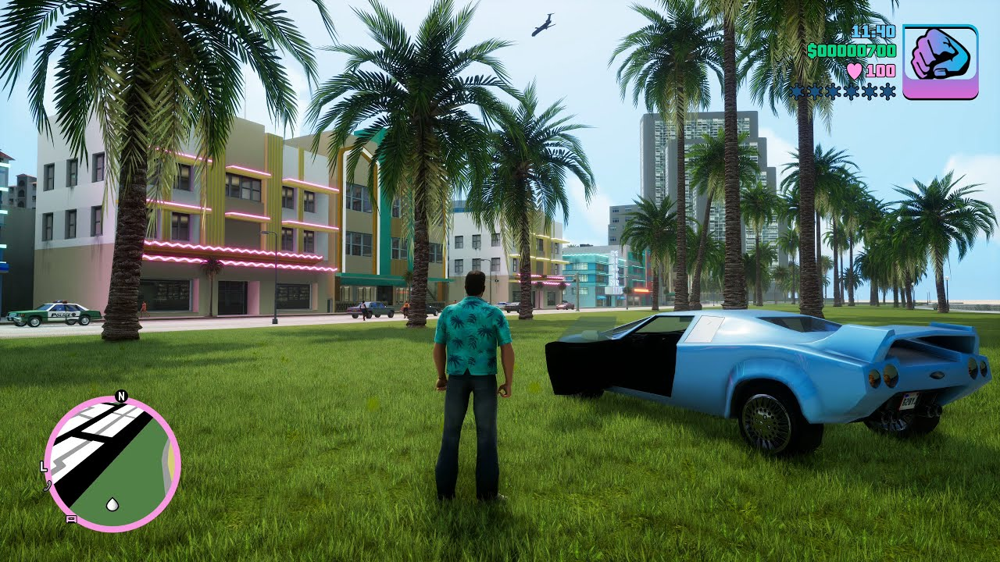
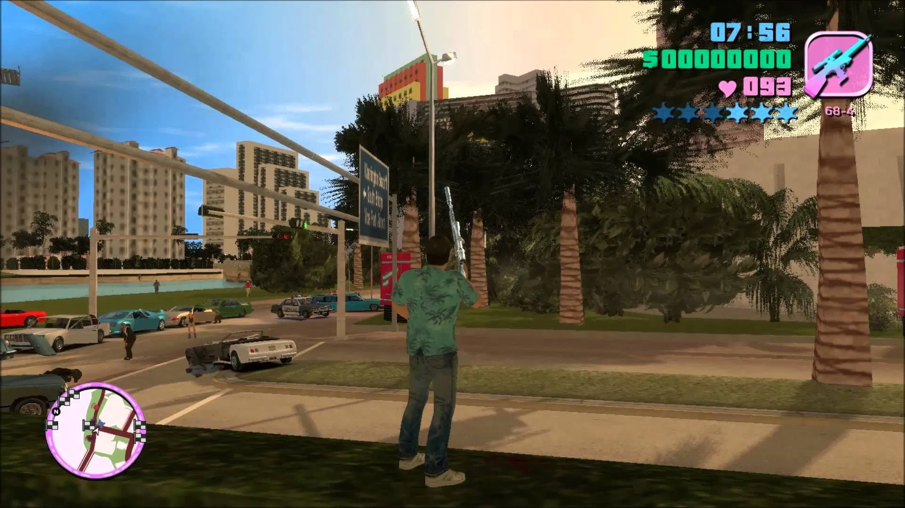
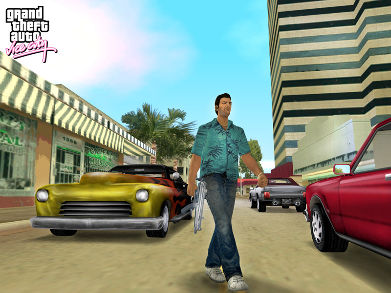
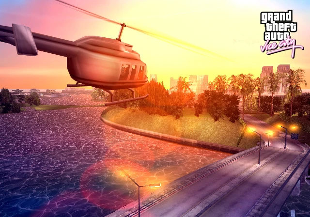

GTA Vice City Free
Game Description
GTA Vice City Pc Game is an open world action-adventure game published by Rockstar Games and developed by Rockstar North. It was released for the PlayStation 2 on October 27, 2002, for Microsoft Windows on May 12, 2003, and for the Xbox on October 31, 2003. This is the sixth game in the Grand Theft Auto series and the first main entry sinceGrand Theft Auto series III in 2001, set in the fictional Miami-based Vice City. The game tells the story of Tommy Vercetti following his ambush, the release of his book, and the search for those responsible. While establishing a criminal organisation and seizing control of other criminal organisations within the city empire. You should play the latest version of GTA San Andreas Download. If you want the most recent version, you can get the GTA 5 Download PC Game.
GTA Vice City Crack incl is an action-adventure game played in the third person. The player controls the criminal Tommy Vercetti in the game, as well as the full linear mission objectives to advance the story. At any given time, you can have multiple active tasks running. Some missions require the player to wait for instructions or events. Outside of missions, the player is free to roam the open world and complete optional side missions. It consists of two main islands and many smaller areas, and the population is much larger than in previous entries in the series. The islands become available to the player as the story progresses.
GTA Vice City by Rockstar Games is a third-person perspective game in which you can navigate the world on foot or by vehicle. The open-world design allows players to move around freely. The GTA Vice City game is divided into two main islands. The plot of the game is based on various real-world people and events, such as the Miami Cuban, Haitian gangs, and motorcycle, the 1980 crack epidemic, the barons of Miami mobster drugs, and glam metal sovereignty. Movies and television shows such as Scarface and Miami Vice also had an impact on the game. Much of the development project was spent on creating the game’s world in order to set the time and inspiration. During the creation of the world in GTA Vice City Download, the development team conducted research on the vast land in Miami.
Screenshot






System Requirements
- Intel Pentium IV or AMD Athlon XP Processor or higher.
- 256 (+) MB RAM.
- 64 MB recommended video card with DirectX 9.0 compatible drivers (“GeForce 3” / “Radeon 8500” or better with DirectX Texture Compression support).
- CD Speed 16 / DVD.
- DirectX 9.0 supporting sound card with surround sound option.
- Free space 1.55 GB hard disk (635 MB if video card does not support DirectX Texture Compression).
- Windows 98, 98 SE, ME, 2000, XP or Vista.
- DirectX 9.0 or later.
- Controller (USB or Joystick port).
- Keyboard and mouse.
GTA Vice City installation Instruction:
- Download the game archive from the download link given below.
- Right-click on the downloaded archive and click on “Extract here”.
- You need WinRAR installed to do it.
- Now right-click on the extracted ISO file and click on “Extract here” again.
- You can also open the ISO with software called “UltraISO”. Click on the “Mount to virtual drive” icon on the 3rd bar on top of UltraISO to mount it. Then go to the virtual drive and open it. This is usually just after My Computer.
- Once mounted or extracted, right-click on the file named “Setup.exe” and click on “Run As Administrator” to start the game installation.
- Wait for it to install the game on your PC.
- Once the installation is complete, open the folder named “Patch & Crack” and run the patch inside and follow the steps it asks.
- Then open the folder named “Crack 1.1” and copy all the files from there and paste them into the directory where you installed the game. For example:
My Computer > Local Disk C > Program Files > GTA Vice City - Click on replace if it asks for it.
- Right-click on the game icon (.exe) and then click on “Run as Administrator” to start the game.
- Enjoy.
Total File Size : 1.2 GB
Download Now